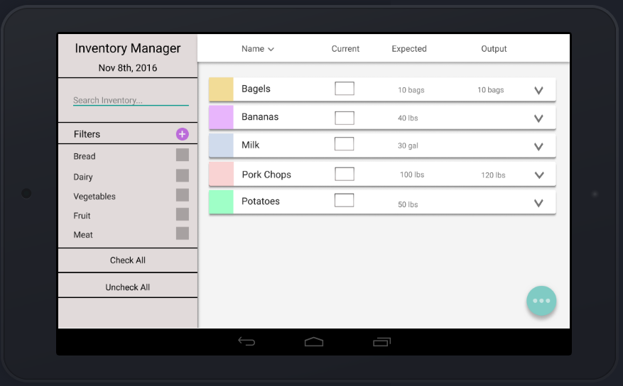
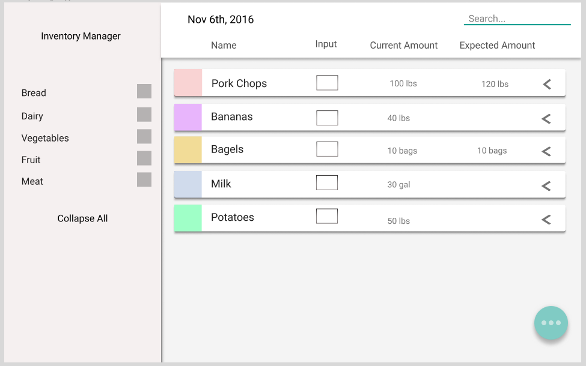
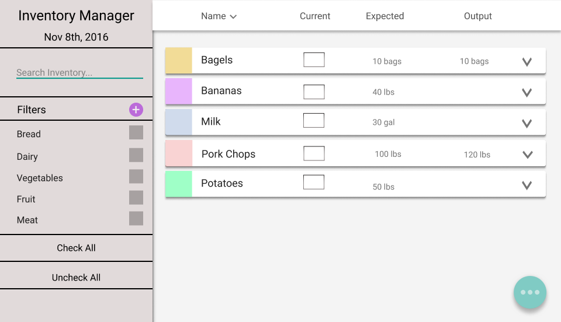

{kind=link}
{kind=link}
{kind=link}
Design Refinement
What is your design? How does it work?

This is the photo of our final iteration home page for the Inventory Manager
Using the following heuristic evaluation script, you can see and interact with our final prototype.
Heuristic Script
Find information about item in inventory
Jeff found on the menu that pork chops is going to be offered for ten meals next week but he’s not sure how much pork chops he should prepare. He decides to add view the current inventory and order more if needed. Then to check the rest of his ingredients he needs to filter for meat, vegetables, and dairy products.
1. We want you to find and locate information about the cards in your inventory.
How would you go about doing that? What do you see that offers encouragement to test features? What features stand out?
- Press on a bagels in the inventory table
- View information about purveyor, expected amount and nutrition, about bagels.
- Close out of bagle information
2. We want you to filter information, to figure out what you have to make a meal.
Where do you see filtering? How would you interact with the filter menu? What do you press first?
- Filter meat, vegetables, and dairy
- Continue on to the next scenario
Adding item to inventory
Jeff hears from a lot of students that he should add shawarmas to the menu but he doesn’t have the necessary meat to make them. While out in the kitchen he decides to add the meat to the inventory but doesn’t want to go down to his office to input it onto his computer. Instead of having to add more sheets of paper to an already stuffed clipboard, he uses an app on a tablet instead.
1. We want you to now add information to your table of cards
How would you go about adding Gyro Meat? Where do you want to click? How do you think you add information?
- Locate and press main FAB button
- Press plus/add button that pops up
- Choose import
- Search for Gyro Meat
- Add Gyro Meat using plus button
- Accept changes
Export items to reorder as CSV file
Jeff is happy using her inventory checklist on her tablet. However she needs to export her is inventory to an external program, in order to share her updated inventory.
We want you to now export your card inventory, so you can send it to your desktop computer. Where would go to send? What do you think the order of operations is? Did you you feel like you understood the process?
- Locate and press main FAB button
- Go to export menu, using FAB button Menu
- Send file as message
- Continue to finishing screen
How has our prototype changed?
Our first paper prototype included pages for creating staff schedules and syncing them across multiple user accounts. At that time, our interface was focused more on creating a unifying experience across multiple devices for the staff of a dining hall or restaurant rather than the experience of taking inventory. We decided shift away from that direction to focus on the inventory part of the app for a few reasons: first, we identified a major pain point for our users - the inefficiency of running around with a clipboard, having to shuffle through papers to take inventory; and second, the idea of creating a mobile-friendly spreadsheet interface really appealed to us. We thought that by shifting away from the typical grid spreadsheet (which is very difficult to work with on mobile) and instead representing the information as interactive cards that don’t cram the screen full of information, we could make a mobile spreadsheet interface more friendly to the general populace. For our users, creating a clutter free interface was incredibly important due to how quickly they move in the kitchen. It is a fast-paced environment and our chefs and managers must be able to get information quickly and rapidly. By reducing the functionality, we could focus on making an application that was easy to use and streamlined the workflow.
You can see our final paper prototype from the last phase here. We started by trying to input all of these features into figma. After working on this for a while, we found that they were not as aesthetically pleasing as some of our paper prototypes, so we changed the layout a bit, namely by moving the search field into the left hand nav bar so the grouping of it and the filters made more sense.
Before we submitted our figma prototype, we actually went through and had a first draft.

Here you can see that the search bar was in the right hand corner, plus their was not even a expand all button. This was an incredibly rough first draft. This screen also did not fit properly into the invision. We had to shuffle around our design, to something that looked more similar to what we submitted for our design heuristic. The people we talked to didn’t mind the change- it aesthetically looked better, and functionally it was easier to read. Overall it was more successful, then this first version, due to the consistency and following a design standard.
Here is the photo of our final home page.

Note the shift in search inventory. The additional arrow next to the name, to indicate it is organized alphabetically. We changed the vocab on the two check all, and uncheck all, from expand all and collapse all.We go into more detail below on what features we have changed.
The second prototype was connected with our design heuristic- Second Design Invision. This is the one we submitted for the heuristic evaluation. As you can tell by poking around, some of the pages were rushed to be created in Figma.
We got a lot of great feedback from the heuristic eval. The feedback was quite varied, and for that we are thankful. We realized that sometimes we got feedback on things that we had accidentally implemented wrong or forgot to implement in invision, which allowed us to then refine the prototype into what it is now. Some of the most relevant points regarding our prototype as it was at that time are as follows:
- It was pointed out that the arrows for expanding and collapsing the ingredient cards were not pointed in the correct direction in accordance with material design guidelines.
- Some of our popup dialogs had both a “cancel” button and a “close” button, which was sometimes confusing to the user.
- The left nav bar contained buttons to expand all/close all of the ingredient cards, but it was pointed out that it made more sense for buttons in that bar to refer to the filters, rather that the content on the right side of the screen.
- We found that the column label bar’s labels were a bit messed up. (Not above the correct columns)
- The save/export button was marked with an “S” instead of a recognizable symbol.
- Our invision prototype felt limited if you were trying to navigate it without a script, as some interactions were not implemented
We were able to incorporate a lot of this feedback into the second iteration of our prototype. However, we only had two days to do this, so we were not able change everything we wanted to. Theses are the things we changed. Again, the link to our updated prototype is here.
- Updated the collapse/expand arrows on the ingredient cards to reflect material design guidelines
- There were consistency issues noted by our evaluators about the material design features
- Updated save “s” icon to be the generic iOS export icon
- Was confusing for users, was not part of standards they have known in the past. Also, they questioned why said we were saving, when in reality we are exporting information.
- Updated popup dialogs to be in material design format, with only one close button.
- Fixed top nav bar labels.
- Created screens for adding a filter.
- Created multiple filter selection screens.
- Darken and blur the background when there are popup dialogs so as to lessen the distraction from those dialogs.
- Changed buttons on left nav to refer to checking/unchecking the filter boxes instead of expanding/collapsing the cards.
This is some feedback that we got which could be incorporated into our final prototype, but we did not have time to put into this iteration:
- Too many taps to get to the plus button
- We currently don’t have any documentation or “helpful hints” in the interface
Key Insights
Working with figma forced us to look at how our paper prototype would have to transition to a digital one. We found that there were a lot of features that simply did not exist in Figma when we were trying to create the digital prototype. Additionally, we realized that things simply look a lot different when you transition them from paper to a structured drawing program. Some features, notably the search field originally in the top bar, looked terrible no matter how we tried implementing them in Figma. This prompted us to shift some things around our interface by placing the search field in the left nav bar.
Something else to note: we’ve been thinking about our prototype’s design in the context of material design, google’s design language, for most of our prototyping phase. Translating the prototype into Figma forced us to realize that some of our critical features do not have direct representation in material design. However, we also realize that the creators of material design probably did not anticipate the design language used in this way. We doubt that there is any framework out there that was built with the express purpose of “creating a new form of mobile spreadsheet”, which means that any framework we choose would give us these same problems. We’ve decided that instead of creating a new design language from the bottom up, we would stick with material design (because it does offer some key features that we love, such as cards) to create our proof-of-concept final design.
What questions do you have now about your project (i.e., are there things you would like to investigate)? What shortcomings are you aware of?
The heuristic eval was great because it allowed other people in HFID to look at our prototype through a “design lens” give us critical design advice. We’ve modified some of the things that were suggested to us, but some of the more major problems that they noticed we won’t be able to fix without recreating the fundamental user experience of our interface. We also found that the heuristic eval, while very helpful, was not timed very well because we only had two days to incorporate feedback and suggestions from it into our prototype. Looking forward to the next phase, we would like to revisit this feedback.
We are also aware that we were not able to talk with as many users as we wanted during this iteration. How can we reach more people? How can we make our interactions with the few users we do have more meaningful and productive?
Effort Chart
| Description | Deniz Celik | Jason Lan | Hannah Twigg-Smith | Hannah Wilk |
|---|---|---|---|---|
| Figma | 25 | 15 | 35 | 25 |
| Invision | 39 | 30 | 1 | 30 |
| Write-up | 0 | 0 | 65 | 35 |
| Website | 0 | 100 | 0 | 0 |